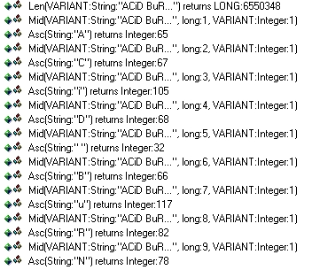
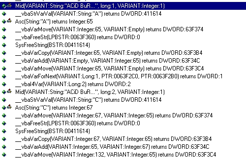
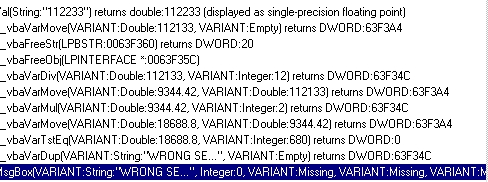

How to keygen Killer_3K's VB crackme 2 by ACiD BuRN [ECLiPSE / CiA]
quotes removed for some reasons :p
Tools needed : - Smart check (and only it)
- a brain (that is need too)
I)Let's go
Fire up smart check , and open it on the K3K's crackme 2 =)
now , enter your name : ACiD BuRN , serial : 112233 ...
click on the button , and close the crackme.
Well , now u must see this in smart check after clicking on "command1_click" :

As you can see , this bith is takin the ascii value for each char , but what he does with ??!
i suppose your smart check is well configurated , so , click on : "show all events" now u must
see , some interesting stuff !! :

now , you see the crackme taking ascii value of the current char (1st it is "A" from ACiD BuRN)
and then it add it to previous ascii value from others chars...
1st it add "65" to "0" coz no chars before "A" ...
in smart check you see this with this line :
__vbavaradd(VARIANT:Empty,VARIANT:Integer:65)
this add 65 to 0 (empty means : no value yet)
if you look down , you see same with the next chars of the name "C" (C from ACiD BuRN)
Asc(String("C") returns Integer: 67 <== take ascii value of the current char , here "C"
then add it to the last add of ascii value:
__vbavaradd(VARIANT:65,VARIANT:Integer:67)
then u see the result :
__vbavarmove(VARIANT:integer:132,VARIANT:Integer:65)
the result is : 132 , and the value:65 is the old result.So we can assume it replace 65 by the
new value : 132
Well it does this for each char ascii value , so this loop take each char ascii value in decimal
from your name , and add them...
--------------------------------
A = 65 + 0
C = 67 + 65 = 132
i = 132 + 105 = 237
D = 237 + 68 = 305
space = 305 + 32 = 337
B = 337 + 66 = 403
u = 403 + 117 = 520
R = 520 + 82 = 602
N = 602 + 78 = 680
---------------------------------
so , the final value from this addition of ascii value is : 680 in decimal ....
now , lets look at the final calcul :

lemme explain you this little shit !!!
1st : you see the entered fake serial : 112233
2nd : you see this : 112133 (it changed !! fake - 100)
3rd : you see : __vbavardiv(VARIANT:112133,VARIANT:12) : this divise the modifed serial with 12
4th : you see : __vbavarmul(VARIANT:9344.42,VARIANT:2) : this multiple the result from the div with 2
5th : you see : __vbavarTstEq(VARIANT:18688,8,VARIANT:Integer:680) : compare the final result with
680 (this is the calculed value with ascii)
6th : you see : Msgbox (VARIANT:"WRONG SERIAL" ... blablabla)
well , now what do u think we must do ? , if you use your brain , all is clear !!
Lemme explain !!
II)Final Explanation :
this crackme does some operations on the entered serial , and compare the serial returned from
this operations to the value of all additioned ascii value (in decimal)...
Well , it is quite easy to find what to do now !!
the result of the operations must be equal to the value of all additioned ascii value (in decimal)
so , lets take this value , and lets reverse this operations !!
- Division become Multiplication ( "/" become " * " )
- Multiplication become Division ( " * " become " / " )
- substracion become addition ( " - " become " + " )
Sorry , but i writte all , to be sure to not have LAME mails and questions !! heh
so , just reverse the serial check to make good serial :
4th : you see : __vbavarmul(VARIANT:9344.42,VARIANT:2) : this multiple the result from the div
with 2
so take ascii value and Divise it with "2"
3rd : you see : __vbavardiv(VARIANT:112133,VARIANT:12) : this divise the modifed serial with 12
so , take the result of the divistion and mutliply it with 12
2nd : you see this : 112133 (it changed !! fake - 100)
so , add the result of the mul with 100
1st : you see the entered fake serial : 112233
now , is not fake but GOOD serial coz it is calculated from the ascii value :)
HERE COMES THE ALGO :
1st = calculate ascii total
2nd = take ascii total and Divise it with "2"
3rd = take the result of the divistion and mutliply it with "12"
4th = add 100 to the result of the multiply.
5th = FUCK !! nothing much , i though u understand =) kidding dude !
Exemple for my nick: ACiD BuRN
1st = 680 (ascii total)
2nd = 680 / 2 = 340
3rd = 340 * 12 = 4080
4th = 4080 + 100 = 4180
NOW TEST IT !!
open the crackme , enter ACiD BuRN as name , and : 4180 as serial !!
A nice little messagebox tell us : GOOD WORK =)
arff !! WE DiD it !!
i hope you enjoyed all this tut !!
III)Bonus : Source in VB5 of the Keygen !!
i coded a little keygen for this , and i will show u source :
--------------------START OF VB 5 SOURCE -------------------------------------
Private Sub Text1_Change()
If Text1.Text = "" Then
Text2.Text = "Enter your name!"
Else
Text2.Text = ""
For i = 1 To Len(Text1.Text) '\
bignum = Val(bignum) + Val(Asc(Mid$(Text1.Text, i, 1))) ' > LOOP for total of ascii
Next i '/
bignum = bignum / 2 'Div with 2
bignum = bignum * 12 'Mul with 12
bignum = bignum + 100 'add 100
Text2.Text = bignum 'this is the final code
End If
End Sub
--------------------END OF VB 5 SOURCE ---------------------------------------
IV)Ending ....
Well , this tut is finish , hope u understand all this piece of shit, but if you have a
comment or one question, mail me to : ACiD_BuRN@crackersinaction.org
you can found all my tuts at : http://acidburn2000.cjb.net/
Enjoy!
Greetings to my groups : ECLiPSE / CiA
Also greetingz to: (no specific order)
R!SC, ^Inferno^, AB4DS, Cyber Blade, Klefz, , Volatility, TORN@DO, T4D
Jeff, [Virus], JaNe , Appbusta , Duelist , tKC , BuLLeT , Lucifer48 ,
MiZ , DnNuke , Bjanes , Skymarshall , afkayas , elmopio , SiFLyiNG ,
Fire Worx , Crackz , neural_en , WarezPup , _y , SiONIDE , SKORPIEN
Lazarus , Eternal_Bliss , Magic Raphoun , DEZM , Bisoux , Carpathia ,
K17 , theMc , noos , Xmen , TeeJi , JB007 , Arobas , T0AD ,ytc , Kwai_lo , Killer_3K....
if your name is not here sorry !!! lot of men to greets !
ACiD BuRN [ECL/CiA]